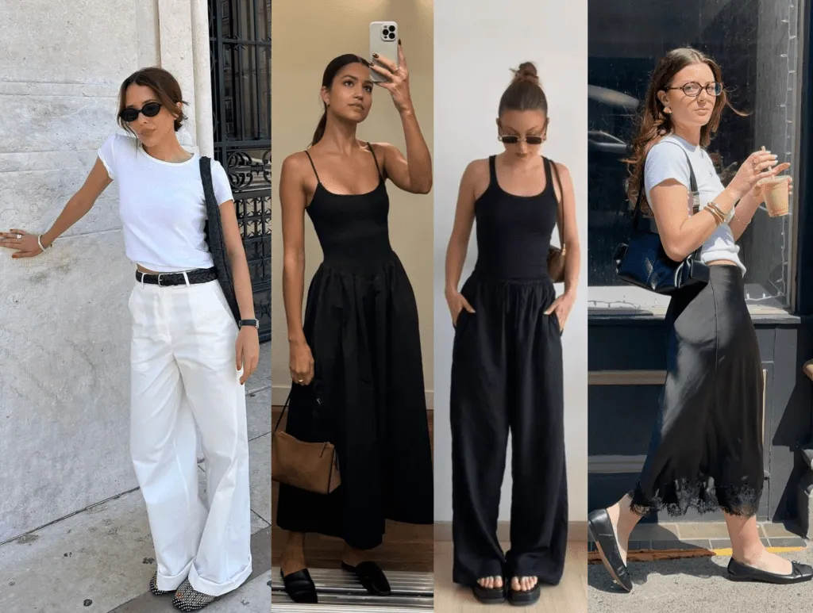
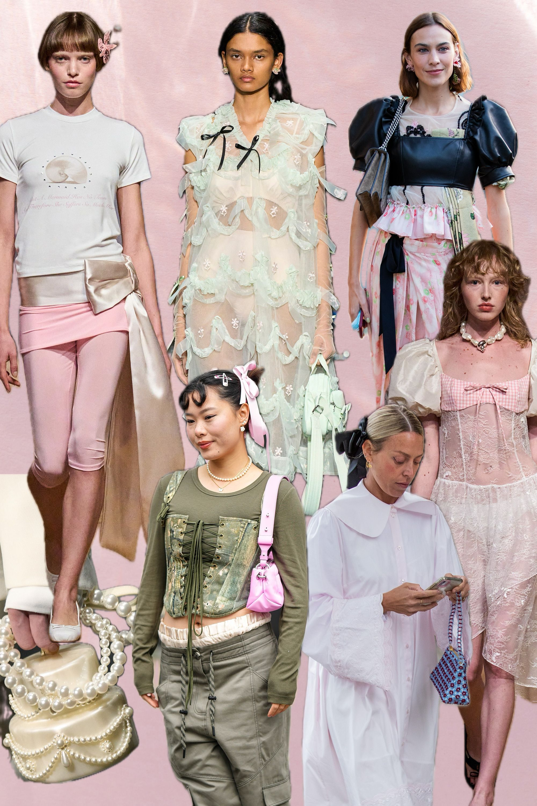
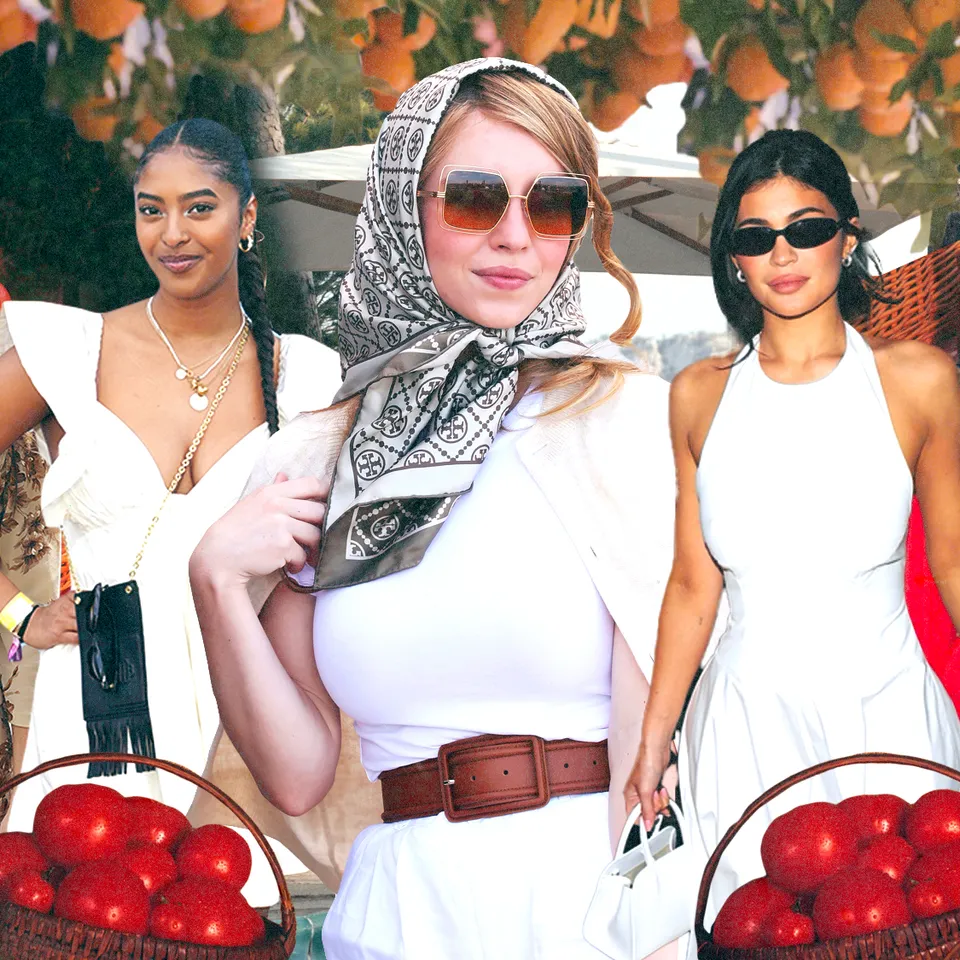
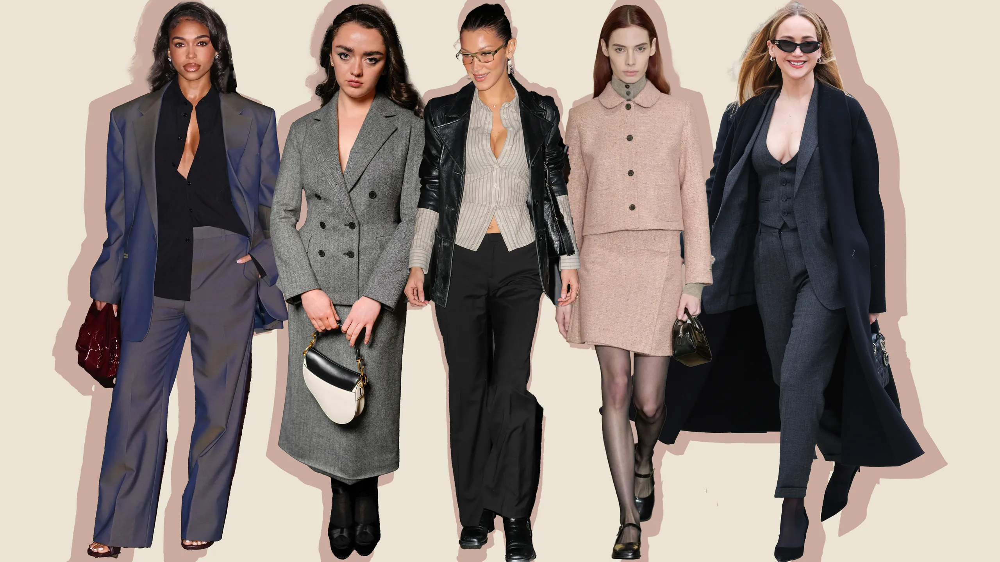

Clean girl
Estética asociada con minimalismo, piel luminosa, tonos neutros, peinados pulidos y una idea de naturalidad cuidadosamente construida.
Las microtendencias son estéticas de circulación rápida que se vuelven visibles en redes sociales, se consumen intensamente y son reemplazadas en poco tiempo.
Dentro del fast fashion, las microtendencias aceleran el deseo de consumo porque convierten la identidad en una imagen cambiante. Cada estética propone una forma de vestir, posar, comprar y pertenecer. Su fuerza no está solo en la ropa, sino en el imaginario que venden.

Estética asociada con minimalismo, piel luminosa, tonos neutros, peinados pulidos y una idea de naturalidad cuidadosamente construida.

Estética vinculada con moños, encajes, colores suaves, feminidad romántica y una sensibilidad visual nostálgica.

Estética marcada por abrigos de pelo sintético, animal print, joyería llamativa, maquillaje intenso y una imagen de lujo excesivo.

Estética inspirada en imaginarios mediterráneos, vestidos ligeros, rojo tomate, cestas, vacaciones y una vida aparentemente sencilla.

Estética que mezcla códigos de oficina, lentes delgados, prendas ajustadas, tonos oscuros y una imagen de poder seductor.
Pregunta para discutir: ¿las microtendencias amplían nuestras posibilidades de expresión o nos enseñan a desear identidades prefabricadas?